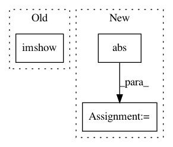

310fd8f1cbf5dbbd56620c920cef6837ddfcc17f,dipy/segment/tests/test_mrf.py,,test_greyscale_iter,#,205
Before Change
print(mu)
print(sigma)
plt.figure()
plt.imshow(initial_segmentation[..., 1])
// npt.assert_equal(initial_segmentation.max(), 3)
// npt.assert_equal(initial_segmentation.min(), 0)
// final_segmentation = initial_segmentation.copy()
After Change
mu = mu_upd.copy()
sigmasq = sigmasq_upd.copy()
Difference_map = np.abs(seg_init - final_segmentation)
npt.assert_equal(np.abs(np.sum(Difference_map)) != 0, True)
return seg_init, final_segmentation, PLY
In pattern: SUPERPATTERN
Frequency: 3
Non-data size: 3
Instances
Project Name: nipy/dipy
Commit Name: 310fd8f1cbf5dbbd56620c920cef6837ddfcc17f
Time: 2016-08-03
Author: neurobarranquilla@hotmail.com
File Name: dipy/segment/tests/test_mrf.py
Class Name:
Method Name: test_greyscale_iter
Project Name: kymatio/kymatio
Commit Name: 44e510ee7d49fe9e9126b2e1ecbd916a18450e84
Time: 2018-11-25
Author: edouard.oyallon@centralesupelec.fr
File Name: examples/2d/plot_filters.py
Class Name:
Method Name:
Project Name: nipy/dipy
Commit Name: 5769051e69929a4a0517b97cd41c8b260c489881
Time: 2016-08-03
Author: garyfallidis@gmail.com
File Name: dipy/segment/tests/test_mrf.py
Class Name:
Method Name: test_greyscale_iter